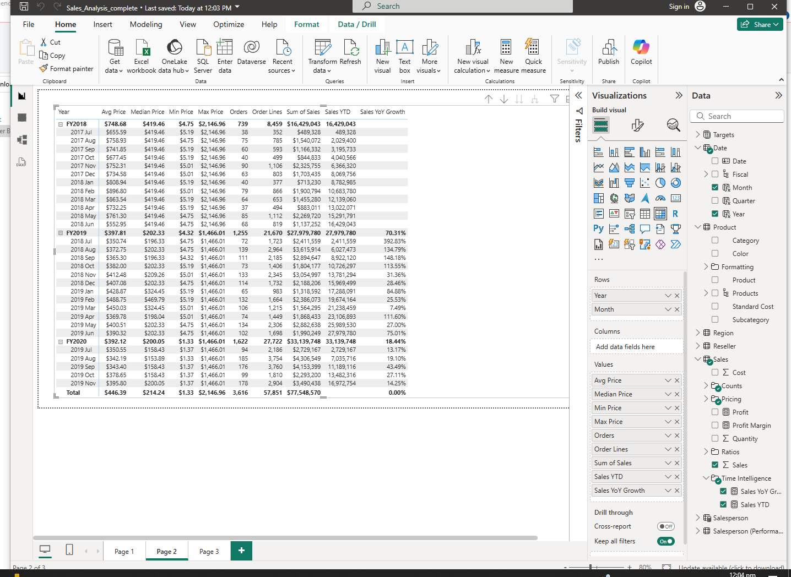

In this activity, I explored the use of DAX Time Intelligence Functions in Power BI and how they help analyze data based on time-related calculations. The activity focused on understanding how DAX functions can compare sales, performance, and trends across different periods such as days, months, and years.
Through this activity, I learned that DAX Time Intelligence Functions are important for analyzing trends and performance over time. I also understood how these functions make reports more interactive, organized, and useful for data-driven decision-making.
Back to Projects Show Project